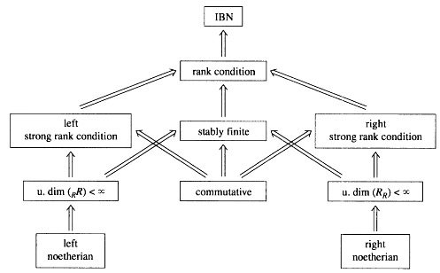

为了把看过的知识变成自己的东西，在此理一下思路（导师建议学的东西记录一下，不然以后过不了多久又忘了，花了时间就要有收获）
2017年内长期更新
自由模
给定一个环$R$，其上(右)自由模
$$F_R = R^{(I)} = \bigoplus_{i \in I} R_i, \quad R_i = R$$
有两种等价刻画：
- $F_R$有一组基 $\lbrace e_i : i \in I \rbrace \subset F$ 使得$F_R$上任意元素都可以唯一的写成 $e_i$ 的 $R$-线性组合
- $F_R$有一组基 $\lbrace e_i : i \in I \rbrace \subset F$ 满足“universal property”: 对$M_R$中任意$\lbrace m_i : i \in I \rbrace$，有唯一的$R$模同态 $f: R_R \to M_R$使得 $f(e_i) = m_i ,i \in I$.
$R^I$表示$R$的$I$次积, 当指标集$I$有限时, 积与直和(余积)等价,此时 $R^{(I)}$通常写成 $R^n$
1. IBN (Invariant Basis Number) 性质
Generation Lemma 表明，对任意模，若 ${e_i : i \in I}$ 是其一族极小生成集，且 $I$是无限集，则$M$不能由基数小于$I$的集合生成。
由Generation Lemma可知，若$R^{(I)} = R^{(J)}$, 且 $I$ 无限，那么 $|I| = |J|$，但是当 $I$ 有限时，结论并不一定成立，例如 $R = End(_kV)$,其中 $V$ 为可数无穷维空间，则$R \simeq R^2$. 因此提出 $IBN$ 的概念：
IBN (Invariant Basis Number) 称环$R$满足IBN性质，如果对任意
$$m,n \in \mathbb{N}, R^m \simeq R^n \Longrightarrow m=n$$
由定义不难看出，$R$ 不满足 IBN 性质，当且仅当, 存在 $R$ 上 $m \times n$矩阵 $A$ 和 $n \times m$ 矩阵 $B$ 使得
$$AB = I_n, BA =I_m$$ 因此 IBN 性质是对称概念.
由IBN上述等价定义知 $f: R \to S \neq 0$ 为环同态，则 $S$ 满足IBN性质可推出$R$ 满足IBN性质。
由上面的结论又可以给出很多满足IBN性质的例子：
Divison rings, local rings, semilocal rings, nonzero commutative rings, finite rings.
2. stably finiteness
称环$R$为stably finite,如果对任意 $n$
$$ R^n \simeq R^n \oplus N \Longrightarrow N=0 $$
等价定义:
- 对任意$n$, $R^n$是hopfian
- 对任意$n$, $M_n(R)$是Dedekind-finite的.
由2可知 stably finite 是对称概念.
由 $M_n(R)$ Dedekind-finite 可知:
若$g: R \to S$ 是嵌入(单射)同态(不要求幺元映成幺元), 那么若$S$ stable finite, 则$R$也是.
由上可知:
$$\prod _{i \in I} R _i \quad \mbox{ stably finite } \iff R _i \quad \mbox{ stably finite for all } i$$
例子:
Commutative Rings, Noetherian Rings
性质:
若环$R$不是 stably finite, 我们可以做一个最大的商环$\bar{R}$,使得 $\bar{R}$ stably finite.
$\bar{R}$可以如下构造, 并可以说明它确实 stably finite.
设 $T$ 为所有形式 $I-YX$ ( 方阵$X,Y$满足$XY = I$ )的中元素生成的理想。可以证明: $\bar{R} = R/T$
自然地, 我们要问啥时候 $\bar{R} = 0$? 这当且仅当存在$C,D \in M_m(R)$,行向量$x$,列向量$y$, 使得
$$ x(I-DC)y = 1$$
3. rank condition
称环 $R$ 满足 rank condition, 如果对任意 $n$, $R^n$ 中生成元的个数都大于$n$.
等价定义1: 任意满同态 $f: R^m \to R^n$ 可推出 $m \geq n$.
等价定义2: 环$R$不满足rank condition, 当且仅当, 存在$n>k \geq 1$, 那么存在 $n \times k$ 矩阵$A$和$k \times n$ 矩阵$B$ 使得$AB=I_n$
由上面等价定义2知道 rank condition 是个对称的概念.
若有环同态 $f: R \to S$, 其中$S$满足rank condition, 那么$R$也满足.
rank condition 与 stably finite 以及 IBN 之间的关系($R \neq 0$):
stably finite $\Longrightarrow$ rank condition $\Longrightarrow$ IBN
套用一下定义,以及它们各自的等价定义,逆反命题就可以证明.
stably finite 与 rank conditon 的密切联系
对任意环$R$, 下面结果等价:
- $R$ 满足 rank condition
- $\bar{R} \neq 0$
- $R$ 有一个非零 stably finite 的同态像
- 对任意$n$, $C,D \in M_n(R)$, 若$CD = I_n$, 则对任意行向量$x$和列向量$y$, $x(I-DC)y \neq 1$
这里难点在于 1 推出 4, 可以用反证法, 用增广矩阵得到
$$
\begin{pmatrix}
C \\
x(I-DC)
\end{pmatrix}
\left(D ,(I-DC)y \right) =
\begin{pmatrix}
CD & 0 \\
0 & x(I-DC)
\end{pmatrix} = I_{m+1}
$$
在simple ring 中 stably finite 等价于 rank condition
4. strong rank condition
称环 $R$ 满足 right strong rank condition, 如果对任意$n$, $R^n$ 中任意线性相关的元素个数不超过 $n$.
等价定义1: 任意单同态 $f: R^m \to R^n$ 可推出 $m \leq n$.
等价定义2: 任意 $m$ 个未定元 $n < m$ 个方程的线性方程组在 $R$ 中必有非零解.(用线性相关的定义可知)
实际上 strong rank condition 不是对称概念, 所以严格上, 我们要指出 left, right.
由 (strong) rank condition 的等价定义可知:
由于 $R^n$ 是自由$R$-模,因此,可以推出 right strong rank condition 可推出 rank condition.
注意right strong rank condition 不像之前的满足 $f: R \to S$, $S$满足”性质”,则 $R$ 满足”性质”.
$A \times B$ 满足 (right) strong rank condition (RSRC) 当且仅当 $A$ 或者 $B$ 满足 RSRC
由上面性质知道, stably finite 和 strong rank condition 是两个独立的概念, 彼此不搭嘎. 例如:
- $R = \mathbb{Q}< x,y >$ 是 stably finite, 但不满足 RSRC.
- 而由上面性质知道, 我们只要构造一个满足RSRC和一个不满足stably finite的积即可.
满足 RSRC 的例子:
Noetherian rings, Commutative Rings.
最后给出一个线性无关的等价定义:
$u_1,\cdots,u_m$ 在 $M = R^n$ 中线性无关, 当且仅当
$$0 \neq u_1 \wedge \cdots \wedge u_m \in \bigwedge ^m (M)$$
5. 总结图
自由模下的关系(任意箭头一般都不可逆):

一般地, Dedekind finite + Rank condition 依然无法推出 stably finite. 例如:
设 $R$ 为由元素$s,t,u,v;w,x,y,z$ 生成的$k$代数,设 $A = \begin{pmatrix}
s & u \\
t & v
\end{pmatrix}, B = \begin{pmatrix}
x & y \\
z & w
\end{pmatrix}$, 其中生成元满足关系: $$AB = I_2$$
由此可知, $R$是domain, 但是一般地, $BA \neq I_2$. 因此 $M_2(R)$不是Dedekind finite的. 因此 $R$ 不满足 stably finite 条件.
定义 $f: R \to k$为 $f(s)=f(v) = f(x) = f(w) =f(1) = 1, f(u) = f(t) = f(y) = f(z) = 0$. 因此由 $k$ 满足 rank condition, so is $R$.
投射模
1. 投射模的定义
一个右$R$模$P$成为projective module(投射模),如果
对任意$R$模满同态$g:B \to C$和任意$R$模同态 $h: P \to C$,存在$R$模同态 $h’: P \to B$ 使得 $h = gh’$
由定义显然free module is always projective.
等价定义: 从右模范畴到Abel范畴 $\hom(P,-)$ 的函子是exact functor(正合函子).
由定价定义易知:
$$\bigoplus_{i \in I} P_i \mbox{ 投射当且仅当 } P_i, i\in I \mbox{ 投射 }$$
由之前说明的自由模都是投射模可知以下条件等价
- $P_R$ 投射
- $P_R$ 是某个自由$R$模的直和因子
- 任意满同态$B_R \to P_R$ split.
由此可知:(Eilenberg’s Trick) 若$P_R$ 投射,则存在自由模$F_R$使得$P \oplus F \simeq F$
Proof: 由$P_R$投射模,所以存在$Q_R$使得$E = Q \oplus P$为自由模, 取$F$为 $E$ 的可数直和即可.
不是投射($\mathbb{Z}$)模的例子:
$\mathbb{Z} / 2 \mathbb{Z}, \quad M = \mathbb{Z} \times \mathbb{Z} \times \cdots$
一个有趣的结果:
设$P = \mathbb{Z} \oplus \mathbb{Z} \oplus \cdots \subset M$, 则$\hom_{\mathbb{Z}}(M/P,\mathbb{Z}) = 0$.
证明关键点在于 $M = A_2 + A_3$, 其中 $A_k = \lbrace (k a_1,k^2 a_2,\cdots,k^n a_k,\cdots): a_i \in \mathbb{Z} \rbrace$
然后说明 $A_k \in P$, 且$f(M)=f(A_2)+f(A_3) \subset f(P)$即可.
2. Dual Basis(对偶基)
$P_R$ 是投射模, 当且仅当它有对偶基, 即存在一族元素 $\lbrace a_i: i\in I \rbrace \subset P$ 和线性函数 $\lbrace f_i: i \in I \rbrace \subset P^{\star} = \hom(P,R)$ 使得对任意$a \in P$, 只有有限个 $f(a_i)$非零, 且 $a = \sum a_i f_i (a)$.
对任意$R$-模$M_R$, $ M^{\star} = \hom(M,R) $ 是左 $R$ 模, $M^{\star \star} = \hom(M^{\star} ,R)$ 是右 $R$模, 我们有自然的右模同态, $\epsilon : M \to M^{\star \star}$定义为: $\epsilon(a) = \hat{a}$, 其中 $\hat{a} (f) = f(a)$ 为求值函数.
特别地, 当 $M_R$ 是投射的, $\epsilon$ 是单同态, $M_R$ 是有限生成投射时, $\epsilon$为同构.
例: $e \in R$ 为幂等元, 则$R = eR \oplus (1-e)R$, 所以, $P = eR$ 为有限生成投射模.
3. Invertible Modules and Fractional Ideals(可逆模,可逆理想)
此小节中默认$R$为交换环
很大一类的交换环上的投射模是由环扩张 $S \supset R$ 得到的.
现在, 给定(交换)环扩张$S \supset R$. 考虑模$S$的$R$-子模, 设 $P,Q$ 为模$S$的$R$-子模, 定义:
$$ PQ = \lbrace \sum p_i q_i : p_i \in P, q_i \in Q \rbrace, \quad Q:P = \lbrace s \in S: sP \in Q \rbrace,\quad P^{-1} = \lbrace s \in S : sP \subset R \rbrace = R:P$$
注意到 $P^{-1}$依赖于环扩张$S$的选取.
由上面定义,我们立即有下面引理(条件1,2等价):
- 存在$S$的$R$-子模$Q$使得 $PQ = R$
- $PP^{-1} = R$
由于上述定价,我们把满足条件的$P$称为 Invertible $R$-submodule of $S$
在此条件下,我们有:
- $P$ 是有限生成投射$R$-模.(利用 $\sum p_i q_i = 1$)
- 任意$R$-子模$M \in S$,自然映射 $f: P \otimes _R M \to PM$ 是 $R$-模同构
- $P^{\star} \simeq P^{-1}$ (因此$P^{\star}$可以成$S$的子模).
- $P_R$是自由模,当且仅当存在$s \in R$使得$P = sR$(此时$s$必然是$s$中的可逆元).
结论4经常用于说明一个模是投射模但不是自由模.
下面有一个很精彩的例子:
设$R \subset S$ 为交换环,$g \in S$满足 $g^2,g^3 \in R$, 即 $g^n \in R$ 对 $n>1$ 成立.定义$P_r = (1+rg, g^2)$, 那么
$$ P_r P_s = (1+rg,g^2)(1+sg,g^2) = (1+(r+s)g+rsg^2,g^2+sg^3,g^2+rg^3,g^4) $$
显然上面集合包含 $g^2(1+(r+s)g+rsg^2)-rsg^4 = g^2 +(r+s)g^3$,
因此包含 $rg^3,sg^3,g^2,1+(r+s)g$, 因此
$$ P_r P_s = (1+(r+s)g,g^2,rg^3,sg^3) $$
再由 $g^3(1+(r+s)g) - (r+s)g^2g^2 = g^3$ 可知:
$$ P_r P_s = (1+(r+s)g,g^2) = P_{r+s} $$
因此$P_r P_{-r} = P_0 = (1, g^2) = R$, 即 $\lbrace P_r: r \in R \rbrace$ 是一族Invertible $R$-submodule of $S$(因此投射), 且 $P^{\star} = P_r^{-1} = P_{-r}$.
$P_r$是$R$-free 当且仅当 $u(1+rg) \in R$ 对所有的 $u \in U(R[g])$
之前说过 $P^{-1}$依赖于$R$的扩张$S$的选取,现在我们在$R$的所有regular element(正则元)这个乘闭子集$C_R$上做局部化得到环$K$,那么自然映射此时是单同态,因此局部化得到的环可以看做$R$的扩张(由$R$唯一决定).且对任意$k \in K$, 都存在regular element $u$ 使得 $uk \in R$.
称$K$的$R$-子模为 fractional ideal(分次理想) 通常记为 $\mathfrak{A}$
引理: 对任意fractional ideal $\mathfrak{A} \subset K$且$\mathfrak{A} \cap C_R \neq \emptyset$, 则有 $\hom(\mathfrak{A}, K) \simeq K$.
Proof: 作映射$\lambda : K \to \hom_R(\mathfrak{A},K)$为: $\lambda(k)(a) = ka$,证明单满即可.
对任意fractional ideals $\mathfrak{A},\mathfrak{B} \subset K$, 我们也有类似引理的证明: 当 $\mathfrak{A} \cap C_R \neq \emptyset$
$$\hom_ R(\mathfrak{A},\mathfrak{B}) \simeq \mathfrak{B}:\mathfrak{A}$$
特别地, 若$\mathfrak{A} \cap C_R \neq \emptyset$,则$\mathfrak{A}^{\star} = \mathfrak{A} ^{-1} = R:\mathfrak{A}$.
对任意fractional ideal $\mathfrak{A} \subset K$, 下面等价:
- $\mathfrak{A}$ 是 invertible module($\mathfrak{A} \mathfrak{A}^{-1} = R$)
- $\mathfrak{A}$ 是投射模,且 $\mathfrak{A} \cap C_R \neq \emptyset$
- $\mathfrak{A}$ 是有限生成投射模,且 $\mathfrak{A} \cap C_R \neq \emptyset$
此条件下$\mathfrak{A}$ 自由模当且仅当 存在 $s \in K$ 使得$\mathfrak{A} = sR$(此时$s \in U(K)$)
由上可知: 若$R \neq K$, 则 $K$ 不是投射模.
Proof: 如果是, 那么必然有限生成投射, 因此
$$ K= \sum _{i=1} ^n R c _i d _i ^{-1} (c _i \in R, d _i \in C _R)$$
那么 $d = d_1 \cdots d_n \subset U(K)$, 我们有 $K = dK \subset R$ 矛盾于条件.
因此 $\mathbb{Q}_{\mathbb{Z}}$ 不是投射模.
4. 交换环上的Picard Group
实际上, 第二小节和第三小节中的Invertible Module 都是”秩为1”的有限生成投射模, 对于交换环, 秩的概念定义如下:
由于若$P,Q$为$R$-模, $P \otimes Q$也是$R$-模, 且当$P,Q$投射时, $P \otimes Q$也是投射模.
当$P$是有限生成投射$R$-模时, 对于$R$的任意素理想$\mathfrak{p}$, 在其上局部化得到 $P_{\mathfrak{p}} = P \bigotimes_{R} R_{\mathfrak{p}} $ 也是有限生成投射的. 由于 $R_{P}$交换局部环, 因此$P_{\mathfrak{p}}$是自由的(交换局部环上有限生成投射模是自由模).因此就有秩, 也就是说我们有从$R$的素谱到$\mathbb{Z}$(带离散拓扑)的一个连续映射. 当这个映射是常值映射时(这要求$R$中无非平凡幂等元),就称这个常值为投射模$P$的秩.
注意到若$rk(P)=n,rk(Q)=m$ 那么 $rk(P^{\star})=n,rk(P \otimes Q) = mn$
引理 设$R \subset S$ 为交换环, 那么在任意$S$的可逆$R$-子模都是秩为1的投射模.
Proof: 用一个Invertible Module(可逆模)的定义, 以及成为自由模的条件, 即可证明.
设 $Pic(R)$ 为 $R$ 上所有秩为1的有限生成投射模的同构等价类. 将$P$ 的等价类记作 $[P]$
我们定义乘法(满足结合律, 交换律):
$$ [P][Q] = [P \otimes Q]$$
$[R]$ 成为 $Pic(R)$ 中的幺元, $[P]^{-1} = [P^{\star}]$.
即 $Pic(R)$ 关于上述乘法构成abelian group. 称为交换环$R$的Picard group.
实际上 “Pic” 还是交换环范畴到abelian group范畴的函子.
具体到$R \subset K$, $K$中所有invertible fractional ideals是$R$上秩为1的有限生成投射模(记为$I_{R}$)但是一般地$R$上所有秩为1的有限生成投射模并不一定同构与某个invertible fractional ideal.
定理 对自然映射$f: R \to K$, 我们有正合列
$$ 1 \to U(R) \to U(R) \to I_{R} \to Pic(R) \to Pic(K) $$
5. (semi)Hereditary Rings.
在交换环中, Dedekind (domain) ring 定义为交换整环$R$, 所有理想都是Invertible Ideal(或者说投射的). 这说明 $R$ 必然是 Noetherian domain. 因此 Dedekind ring 也可以定义为 noetherian domain 中整闭的Krull维数为小于等于1的环, 也可以定义为满足每个理想都是一些素理想的有限积的交换整环.
把上述 Dedekind ring 推广到非交换的情形, 我们有如下 Hereditary ring 的定义:
A ring $R$ 称为右(左)Hereditary ring, 如果它的每个右(左)理想都是投射的, 如果它既为左又右,那么就成为 Hereditary ring.
Kaplansky’s Theorem 设 $R$ 为right Hereditary ring. 任意$R$-自由模的子模$P$都同构于$R$的一些理想的直和. 特别地, $P$是投射的.
由于每个模都可以看成自由模的同态像, 投射模是某个自由模的直和因子, 又由Kaplansky定理知:
- 在一个 right hereditary $R$ 上, 一个$R$-模 $P_R$投射, 当且仅当它能嵌入到一个自由模中.
- 环$R$投射, 当且仅当, 每个投射$R$-模的子模都是投射的.
- 若环$R$是PRID(principal right ideal domain), 那么每个自由$R$-模的子模都是自由的.
类似于 Hereditary ring 的定义, 我们称一个环 $R$ 为 semihereditary ring:
$R$ 称为右(左)semihereditary ring, 如果 $R$的每个f.g.(finitely generate有限生成)右(左)理想都是投射$R$右(左)模. 如果既左又右,称为 semihereditary ring.
我们称交换的semihereditary ring为Prufer ring.
类似于 Kaplansky’s Theorem 我们有$R$为 right semihereditary ring. 任意 $R$-自由模的有限生成子模$P$都同构与有限个$R$的理想的直和.
right semihereditary 的等价刻画:
$R$ 为 right semihereditary ring 当且仅当投射右$R$模的有限生成子模都是投射的.
例子:
- Semisimple ring is hereditary.
- PRID is right hereditary, 例如 $D[x]$, 其中$D$是division ring.
- $M_n(R)$ is semihereditary, 其中$R$为Dedekind ring.
- von Neumann regular ring is semihereditary.
- $$\begin{pmatrix} \mathbb{Z} & \mathbb{Q} \\ 0 & \mathbb{Q} \end{pmatrix}$$ 是 right hereditary, left semihereditary, but not left hereditary. Note that this example is also left artinain but not right noetherian.
6.Hereditary Artinian Ring
Hereditary artinian ring 十分的重要(因为简单0.0), 一般一个概念加上artinian 条件就会变得特别简单, 例如 Artinian commutative domain is field.
设$J = rad R$为环$R$的Jacobison radical. 若$R$是artinian ring. 以下结论等价:
- $R$ is right hereditary.
- $J$ 作为右$R$-模是投射的.
- 对任意幂等元$e$, $eJ$是投射右$R$-模.
- $R$的任意极大右理想都是投射右$R$-模.
证明难度还是有的, 要用到任意有限生成artinian模都是有限长的.
例子:
设$R$是divison ring $D$上的$n \times n$上三角矩阵全体, 则$R$是hereditary artinian ring.
7 Trace Ideal
Definition: 对任意 $P_R$, 定义$tr(P) = \sum im(f)$ 其中, $f$ 跑遍 $P^{\star}$. 容易看出 $T = tr(P)$ 是 $R$ 的理想, 称为 Trace Ideal. 它满足:
若$P_R$ 是投射的, 则 $PT = P, T^2 = T, ann(P) = ann_r(T)$
特别的, 若$P_R$ 是有限生成投射的, 那么其对偶基$\lbrace a_i f_i \rbrace_{1\leq i \leq n}$. 那么 $tr(P)$ 可由有限集 $\lbrace f_j(a_i) \rbrace$ 生成.
另外,若 $tr(P) = R$, 我们称 $P$ 是生成子.
引理 设$T$是交换环$R$的有限生成幂等理想, 则存在幂等元$e \in R$ 使得 $T=eR$.
Proof: 关键在于把 $T$ 写成 $T = \sum_{i=1} ^n Tx_i$
由上述引理和$T = Tr(P)$的性质, 不难证明下面定理:
定理 设$P_R$是交换环$R$有限生成投射模, 那么存在幂等元$e$使得$T=Tr(P)=eR, N = ann(P) = (1-e)R$, 特别地, $R = T \otimes N$, 投射模$P_R$是faithful(忠实的)当且仅当$T = R$.
当$R$无非平凡幂等元时, 则$P \neq 0$ 是(有限生成投射)生成子.
定理中条件缺一不可, 且幂等元$e$可以根据有限对偶基显式表达出来.
Trace ideal 的应用:
引理 设$R \subset S$ 是环(不要求交换), 则 $R$是$S_R$的直和因子, 当且仅当, $Tr(S_R) = R$.
Proof: 若$R$是$S_R$的直和因子, 则 $Tr(S_R) \supset Tr(R_R) = R$, 所以$Tr(S_R) = R$.
若$Tr(S_R) = R$, 那么存在 $f_i \in S_R^{\star},s_i \in S, (1 \leq i \leq n) $ 使得 $\sum f_i(s_i) = 1$.
定义映射 $\lambda: S \to R$ 为: $\lambda(s) = f(s_i s)$. 为环同态, 且在$R$上限制为恒等映射.(因此$R$是$S_R$的直和因子).
定理 设$R \subset S$, 其中$R$是交换环, $S$ 是f.g. 右$R$-模. 则$R$是$S_R$的直和因子.
Proof: 由$ann(S_R) = 0$, 在由上面引理即证.